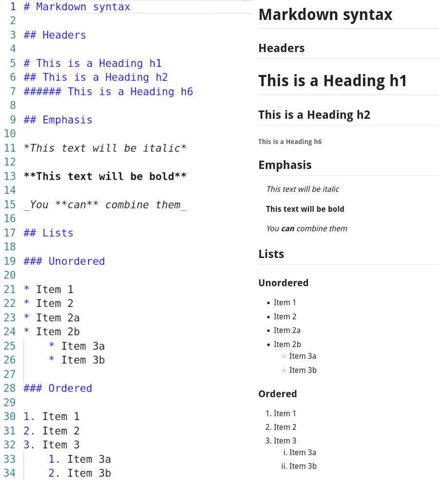

5 Reproducible notebooks
A reproducible notebook is a digital document that combines text, code and results (like figures and tables) in one place. The key feature is reproducibility: anyone can run the notebook again and get the same results, as all the steps, data and code are included together. This is especially important in science and data analysis, where others need to verify or build upon your work.
5.1 Why use a reproducible notebook?
Using a reproducible notebook makes your work much clearer and easier to understand for both yourself and others. These notebooks let you show every step you took to get your results, from the raw data all the way to the final charts and tables (see Chapter 2). Because your code and explanations are together in one place, anyone reading your notebook can see exactly how you did your analysis, which makes your work more trustworthy and transparent. If you ever need to update your data or fix a mistake, you can change the data or code, and the notebook will automatically update all the results and figures for you. This saves a lot of time and helps avoid errors.
Using reproducible notebooks also reduces mistakes introduced when copying and pasting between different software programs. They help keep your results and models synchronised, so you always know which code produced which output. You can also give readers more insight into your research process by including details about different approaches or analyses you tried before reaching your results. These extra details can be added as supplementary material or tracked in your version control system (see Chapter 6), making your work even more open and robust.
You can create reproducible notebooks using tools like Quarto and Jupyter. Both are language agnostic, meaning you can use R, Python, Julia and other languages in the same document. In this section, we will focus on Quarto.
5.2 What is Quarto?
Quarto is a modern, open source tool for creating reproducible notebooks and technical documents. You can mix text (written in Markdown), code (Python, R, Julia, etc.) and outputs like plots and tables. Quarto documents can be turned into polished reports, websites, PDFs, slides and more, all from a single source file.
Quarto helps you keep your code, results and explanations together so others can see exactly how you did your analysis and can easily reproduce or build on your work.
5.3 Getting started with Quarto
You can use Quarto in many IDEs, including RStudio and VS Code. In both RStudio and VS Code you create a new file with the .qmd extension to start writing your notebook. You can write text and code in this file. In RStudio you can toggle between the “Source” and “Visual” options using buttons near the top of the file. “Source” shows the notebook in Markdown format, “Visual” shows you what the rendered final file will look like. In VS Code you can use the “Quarto: Preview” command or press Ctrl+Shift+K to render and view your output as HTML, PDF, or Word.
5.3.1 Setting up your document (YAML Block)
Every Quarto document starts with a YAML block at the very top, which is used to set important information and options for your document. In the YAML block, you can add things like the document’s title, author and date, as well as specify the output format1,2,3. You can also include details like the author’s affiliation, a subtitle, keywords, table of contents, bibliography files for citations and custom settings for how code and figures are displayed. YAML can handle simple values, like a title or date, lists, such as multiple authors or keywords, and more complex settings like nested options for output formats or author details4.
The YAML block is surrounded by three dashes at the top and bottom:
---
title: "My First Quarto Document"
author: "Your Name"
date: "2025-04-21"
format: html
---5.3.2 Writing text with Markdown
Below the YAML block, you write your main content using Markdown, a simple way to add formatting to your text, like headings, bold, italics and lists, using plain characters. For example, writing ## Introduction makes a heading and *italic* makes text italic. Markdown helps keep your writing readable and easy to edit.

5.3.3 Adding code chunks
A code chunk is a special block where you write code, and Quarto will run it and show the results in your document. Code chunks start and end with three backticks (```) and the language you are using:
```{python}
import matplotlib.pyplot as plt
plt.plot([1, 3, 2])
plt.show()
```You can also add options to your code chunk. For example, adding echo: false at the top of the chunk will hide the code and show only the result (such as the plot). This is useful if you want your readers to see just the output, not the code itself.
Code chunk refers to a section of your document where you write and run code whereas controls whether the code is shown (echo: true) or hidden (echo: false) in the final document.
5.3.4 Inserting figures and images
When your code creates a plot or image, Quarto automatically includes it as a figure. You can add a caption, a short description under the figure, and a label, a name you use to refer to the figure later, by adding special lines at the top of your code chunk. For example:
```{python}
#| label: fig-simple
#| fig-cap: "A simple line plot"
#| fig-alt: "Here is where to put alt text"
plt.plot([1, 3, 2])
plt.show()
```This will show the plot with the caption “A simple line plot” underneath; you can refer to this figure elsewhere in your document using its label fig-simple.
5.3.5 Creating tables
You can also create tables from your data using code. Quarto will display the table in your document, and you can add captions and labels just like with figures. For example, if you are using Python with the pandas library, you can create a small data table and show it in your notebook like this:
```{python}
#| label: tbl-sample
#| tbl-cap: "Example of a simple data table"
import pandas as pd
data = {
"Species": ["Oak", "Pine", "Birch"],
"Height_m": [20, 15, 10],
}
df = pd.DataFrame(data)
df
```In this example, the table will appear in your document with the caption “Example of a simple data table” underneath. The label tbl-sample allows you to refer to this table elsewhere in your text.
5.3.6 Cross-referencing figures and tables
If you want to refer to a figure or table in your text, you use the label you assigned to it. In the table example above, the data table has the label tbl-sample. In your text, writing “See Table @tbl-sample for a summary of the data” means that Quarto will automatically turn @tbl-sample into a clickable link to the table in your document. This process is called a cross-reference. ross-referencing makes your document easier to navigate and helps readers quickly find the information you mention.
5.3.7 Adding citations
To refer to books, articles, or other sources, you can add citations in your Quarto document. You keep your references in a separate file, usually called references.bib, which uses the BibTeX format. For example, writing a citation like [@smith2020] in your text will make Quarto format it and add it to the reference list at the end of your document.
Software citation managers such as Zotero or Mendeley can help you collect and organize your references, and they provide options to export your citations as a BibTeX (.bib) file. If you want your references to follow the style of a specific journal, you can use a Citation Style Language (CSL) file. CSL files for most journals can be downloaded from the Zotero Style Repository.
https://quarto-tdg.org/yaml.html accessed 15th August 2025↩︎
https://quarto.org/docs/authoring/front-matter.html accessed 15th of August 2025↩︎
https://rpubs.com/drgregmartin/1266674 accessed 15th August 2025↩︎
https://quarto-tdg.org/yaml.html accessed 15th August 2025↩︎